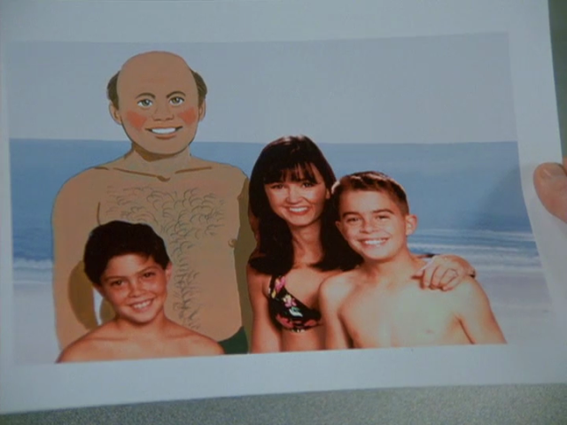

'bout 2am
So today I figured out what was going on here. I guess I never put much thought into it. I was already into digital photo manipulation by the time I properly watched this episode. It's trivial for me to make a copy of a photo or undo changes or have a backup of the original or something. So I was always like "but... surely there must be a copy, why can't this be undone/why wasn't this prevented" but again, I never really thought about it that much
Oh but today, I was thinking about it when I was showering and it dawned on me that the guy is literally airbrushing the original photo. George takes it to the dude and he just airbrushes directly on to the photo that George gave him. I don't know what photo duplication was like then but I assume you could easily get a copy of a photo. I don't know the process. Were they doing digital in 1997? Also George is cheap and hasty so he probably just paid for the bare minimum.
